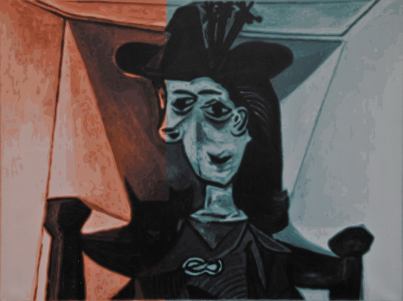
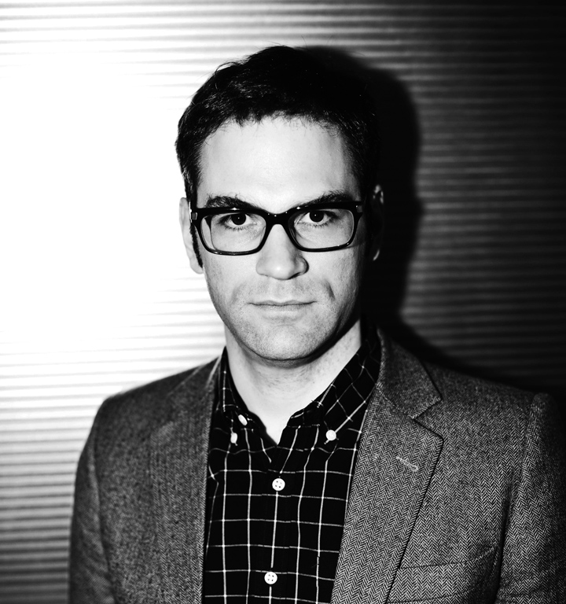

我能看看你的展览吗？
田霏宇
“绘画就是占领博物馆墙面的东西。”颜磊这样回答了关于“什么是绘画”的问题，在上个月初北京最近的艺术博览会同时举行的管艺收藏展中，管艺向十个参展艺术家提出了这个问题。这一展览在隶属于丹麦文化中心的一家画廊空间举行，位于一片叫做 “上东”的高档公寓底层，离颜磊所居住的北京东北角相当近。一面显眼的墙面上挂着八张已成为颜磊标志之一的“彩轮”系列作品；每张一平方米的帆布画面排列得当，有心的参观者可以一眼看出画面中靶心的颜色是如何成为下一副画的背景色的。这些绘画的理性逻辑——由未经训练的工人根据色板的序列直接用无需调色的丙烯颜料来涂画——这和经常变换的展出背景表面上的任意性一样重要。这种作品与展示、艺术家与系统、创作者意图和话语系统之间的反差是颜磊现在生活与工作的靶心，也正是他的思想与绘画围绕着的原点。
……
颜磊的创造不仅仅是关于艺术系统的艺术，也是关于艺术系统所带来的心理学与主体性——而这些状态与他的在场本身是不可分割的，这首先体现为一种精明的元批判，随后才暴露出它的真实、紧张的面貌。这种紧张成为了颜磊日后决定不再亲自绘画的理论基础，而这一决定并非基于对一个艺术品所包含的商品性的批判（正如他所喜欢的安迪•沃霍与杰夫•昆斯），而基于不再亲自绘画作为唯一的解决方式这一概念，以面对像“去德国的展览有你吗？”这样比较的逻辑。这一逻辑曾表现为对参与国际大型展览的竞争，如今表现为每几个月最新的拍卖结果在网络上公布。
也许是由他的这种困境所激发——受困于试图说出某些大胆的东西的创作意图和把某些微妙的作品定义为对中国社会变迁的描述的策展系统这两者之间——颜磊与全球艺术界的下层阶级产生一种普遍的情绪。在2004年春天，法国南部尼斯的阿尔松市的驻村项目中，颜磊认识了那里看门的女子。“我选择这个地方，在此刻，我把我的心留在这里，直到永远。”这是颜磊为这个女子所拍的摄影作品上的一段话，她曾经是这个中心驻村艺术家的模特，随着年龄的衰老在那里做接待员，就像拉斯维加斯的演出女郎们最终都只能坐柜台换赌币。这段话形容了这个女子这一生的工作，也形容了若干世纪前在同一片土地上的教堂里无名劳作着的泥瓦匠，把这段带着圣经意味的文字刻在了教堂的建筑内：Elegi locum istum ut permaneat cor meum ibi nunc aliis die
尽管颜磊并没有像这个女子一样被命定留在同一个地方度过一生，但他对自己在全球艺术精英航空士地位的焦虑产生了他的另一系列作品：上升空间。这一系列作品取自于颜磊所拍摄的风景和空间的数码照片，这些场景充满着地缘政治学和艺术界的花絮。有些描绘了北京外围已经被划为新艺术区的村庄，有些展示了欧洲众多首都美术馆的外观。但这一系列的核心是国际航空旅行，关于飞机以及机场作为不同国家和不同状态之间的中间地带。他们是对艺术界高层社交所需要的极度流动性的冷漠潜台词。要一个靠窗户的位置就已经是很低级的事，再低级的就是坐在这个窗前拍些照片？
“上升空间”与“特醇”之间只有一步之遥，后者始于2005年，以别的画家的作品为基础，重新画为两个单色调分明的作品。如果前者描述的是艺术界花絮的主体，后者则是更直接接近了这一现象的客体。他的最初想法是这些作品不是仅作为一些对原作重画的样本而存在，而更是像“中南海特醇”香烟与更重一些的香烟的比较，它的浓度与力量被稀释，这一系列的理论基础正是对过去伟大作品的淡化和消解。该系列最有力的一件作品是“特醇—毕加索”，

基于毕加索那张创下拍卖纪录的《拿着烟斗的男孩》（苏富比纽约，2004年五月创下了一亿美金以上的纪录），此作品被送去参加苏富比去年三月第一次亚洲当代艺术的拍卖随后又被取消。之后该作品被颜磊之前的欧洲画廊卖出，他决定再画一张以参加现在这个展览。有五张“特醇—香港”作品在本次展览上展出，它们体现了颜磊与这个他在九十年代初居住过的城市的复杂关系，这些画面上，媚俗的陶罐和乐器的静物，是重画了五张曾经在他所合作的商业画廊里卖出的作品，它们体现了这座城市不论有多么大都会化，仍然缺乏趣味。
……
田霏宇
翻译：黄小璐

田霏宇
田霏宇（生于1979年）现任北京尤伦斯当代艺术中心的馆长。他也是现代传播集团建刊于2010年的中英双语杂志《艺术界》的首任主编。田霏宇同时兼任Artforum（艺术论坛）的自由编辑。写过许多评论中国当代艺术的文章，并举办过多场讲座和研讨。田霏宇定居北京已有十余年，有着哈佛大学东亚研究的硕士学位，杜克大学文学系的学士学位，及北京大学富布莱特研究员（Fulbright fellow）。